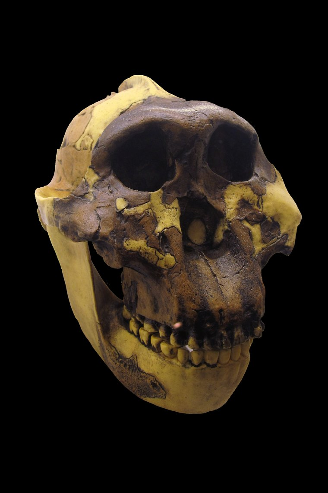

Cast of a Paranthropus boisei cranium
Photo/artwork by Rama, via Wikimedia Commons, licensed under CC BY-SA 3.0 fr. Cropped and resized for this site.
Paranthropus boisei
A specialist of the chewing apparatus — and a dead end on the tree.
Overview
Paranthropus boisei is the most extreme of the 'robust' australopiths: a powerful chewing machine that coexisted with early Homo for over a million years in eastern Africa. Mary Leakey's 1959 discovery of 'Nutcracker Man' at Olduvai Gorge helped launch modern field palaeoanthropology.
Far from being primitive, Paranthropus was highly specialised and successful — until it vanished, leaving no descendants.
Anatomy & Body
Its skull is unmistakable: a wide, dish-shaped face, enormous cheekbones, the largest molars of any hominin, and a bony sagittal crest along the top of the skull anchoring massive chewing muscles.
Below the neck it was a fairly ordinary small-bodied biped. The cranial machinery — not the body — is what sets it apart.
Brain & Cognition
Brain size of 500–550 cc was a touch larger than the gracile australopiths but well below contemporary Homo. There is no good evidence that Paranthropus made the stone tools found in its time and place.
Behavior & Culture
Despite the 'Nutcracker' nickname, tooth-wear and isotope studies suggest boisei ate large quantities of C₄ plants — grasses and sedges — rather than only hard nuts. Its grinding dentition processed huge volumes of tough, low-quality vegetation.
Key Fossils
- OH 5 (“Nutcracker Man” / “Zinj”) — the type cranium from Olduvai Gorge.
- KNM-ER 406 and the “Black Skull” (KNM-WT 17000, P. aethiopicus) from Turkana.
Relationship to Us
Paranthropus is a true evolutionary cousin: it branched off and specialised in parallel with our own genus, then went extinct around 1.2 million years ago. We are not descended from it.
Discovery & history
On 17 July 1959, Mary Leakey found a fragment of an enormous-toothed cranium eroding out of Bed I at Olduvai Gorge in Tanzania. The specimen, OH 5, had a sagittal crest, cheekbones flared for vast chewing muscles, and molars several times the area of our own.
Louis Leakey named it Zinjanthropus boisei, after Charles Boise, who had funded the couple's work. In camp it was "Dear Boy"; the press called it "Nutcracker Man". The genus name did not survive scrutiny and the species was later moved to Paranthropus, but the nickname stuck permanently.
OH 5 changed palaeoanthropology as a profession. The publicity brought the Leakeys sustained funding from the National Geographic Society, turning what had been decades of underfunded searching at Olduvai into a continuous, well-resourced research programme. The finds that followed — including Homo habilis — were made possible by it.
The related "Black Skull", KNM-WT 17000, recovered west of Lake Turkana in 1985 and assigned to P. aethiopicus, pushed the robust lineage back to about 2.5 million years.
Debates & open questions
The nickname is probably wrong. This is the most satisfying reversal in the species' history. Everything about the skull says hard-object feeding: huge flat molars, enamel up to twice the thickness of ours, and chewing muscles anchored to a bony crest. For fifty years boisei was pictured cracking nuts and seeds.
Two independent lines of evidence undid that. Carbon isotope analysis of the tooth enamel, published by Thure Cerling and colleagues in 2011, showed a diet overwhelmingly dominated by C4 plants — tropical grasses and sedges — rather than the C3 fruits and nuts of woodland. Separately, the microscopic wear patterns on the teeth do not show the pitting that hard-object crushing produces; they look more like the wear of an animal processing large volumes of tough, abrasive vegetation. The apparatus may have been built for bulk and grinding, not for cracking.
Is Paranthropus even a single group? The East African species (boisei, aethiopicus) and the South African P. robustus share their heavy chewing anatomy, but that anatomy is exactly the sort of thing that evolves repeatedly under similar diets. Whether the robust australopiths form one real clade or two convergent lineages is unsettled.
Did it make tools? Oldowan artefacts occur in the same deposits, and Paranthropus hands were capable of a precision grip. But Homo was present too, and attribution remains contested.